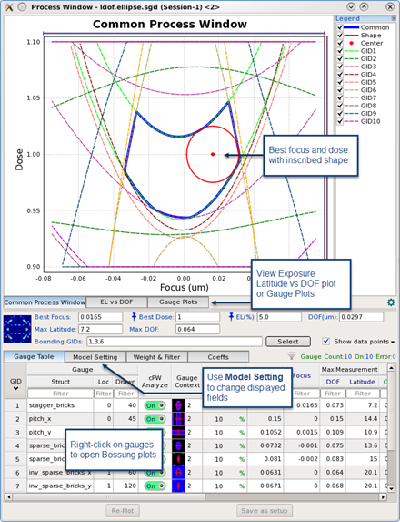

Calibre WORKbench provides a display tool
that can be used to create a process window (PW) plot. The Process
Window plot shows the common process window, best focus, and best
dose across a set of gauges. It displays two types of plots in separate
tabs – a Common Process Window (CPW) and exposure latitude (EL)
versus depth of focus (DOF) plot. It provides controls to toggle
individual gauges or adjust model settings to quickly see how they
affect the CPW or EL vs DOF values.
Figure 1. Process
Window Plot
Procedure
- Open the
PW Plot tool (Litho > PW Plot).
- Browse to the .sgd file.
The Process Window appears
for the selected .sgd file.
- In the Gauge Table tab,
select and weight the gauges for the CPW calculation. After changing
any setting, click Re-Plot to update the
Common Process Window and EL vs DOF plots.
To
remove a gauge from the calculation, turn off cPW Analyze for the
corresponding gauge.
To view the
Bossung plots for a gauge, right-click on the gauge and select Bossung
Plots for GID X.
To change the
weighting of a gauge, right-click on the gauge and select Set
Weight Setting of GID X.
Turn on Enable Weighting. Adjust the Width Factor, Focus Center,
and Dose Center to increase the influence of robust data points
and reduce the influence of outliers.
To remove a gauge based on a percentage of
the target CD, right-click on the gauge and select Set
Prefilter Setting of GID X.
Verify that the prefilter is enabled, and set the CD range for filtering
data.
To remove a
gauge based on root mean square error (RMSE) from the fit model,
right-click on the gauge and select Set Filter Setting
of GID X.
Verify that the filter is enabled and set the filter type and value
to remove outliers.
To change the
CD tolerance for a gauge, right-click on the gauge and select Set
CD Tolerance. Adjust the Type and numbers to change
the tolerance for the gauge.
- To change
process window plot settings, click the Model Setting tab
and change the desired setting. After changing any setting, click Re-Plot to
update the Common Process Window and EL vs DOF plots.
To
change the shape of the fit inside the common area when measuring
depth of focus (DOF), change the Type to Elliptical or Rectangular.
To change the
whether DOF calculations use the nominal print image CD or the drawn
CD, change the Target CD.
To change the
type of polynomial used to model the common process window, change
the Model Form to Poly13 or Poly8. Poly13 is recommended.
- In the Weight & Filter tab,
select and weight the CD data points for the CPW calculation. After
changing any setting, click Re-Plot to update
the Common Process Window and EL vs DOF plots.
To change the weighting of CD data points,
click the Weight subtab. Turn on Enable Weighting.
Adjust the Width Factor, Focus Center, and Dose Center to increase
the influence of robust data points and reduce the influence of
outliers.
To remove CD data points based on a percentage
of the target CD, click the Prefilter subtab.
Verify that the prefilter is enabled, and set the CD range for filtering
data.
To remove CD data points based on root mean
squared error (RMSE) from the fit model, click the Filter subtab.
Verify that the filter is enabled, and set the filter type and value
to remove outliers.
- To view
the coefficient values for the CD model, click the Coeffs tab.